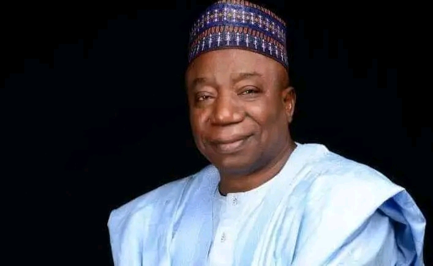
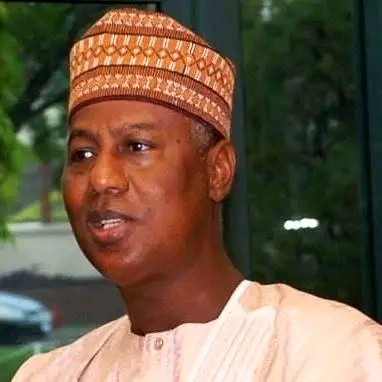
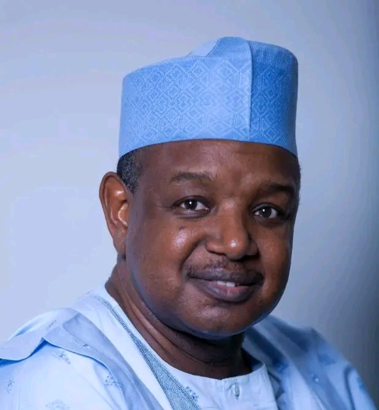

Democratic History of Kebbi State
Since Nigeria’s return to democratic governance in 1999, Kebbi State has experienced
successive administrations that have contributed to governance, development, and
institutional stability. Each leader played a role in shaping the state’s democratic
journey, leading to the people-focused governance of the current administration.
Governor Adamu Aliero (1999–2007)

Governor Adamu Aliero was the first civilian governor of Kebbi State in the Fourth
Republic. His administration focused on rebuilding democratic institutions after
years of military rule and laying the foundation for civil governance.
Key Contributions
- Established democratic governance structures
- Strengthened public administration
- Promoted agriculture and rural development
Governor Saidu Usman Dakingari (2007–2015)

Governor Saidu Dakingari served two terms, focusing on continuity and expansion
of public services. His administration invested in healthcare, education,
and road infrastructure across Kebbi State.
Key Contributions
- Expansion of healthcare facilities
- Scholarship and education initiatives
- Road construction projects
Governor Abubakar Atiku Bagudu (2015–2023)

Governor Abubakar Atiku Bagudu’s tenure was marked by a strong emphasis on
economic development and agriculture. Kebbi State gained national recognition
for rice production and agribusiness initiatives.
Key Contributions
- Boosted agricultural production
- Attracted local and international investment
- Strengthened the state’s economic profile
Governor Nasir Idris (Kauran Gwandu) (2023–Present)

Governor Nasir Idris, widely known as Kauran Gwandu, assumed office with
a reputation rooted in labor advocacy and people-centered leadership.
His administration emphasizes fairness, accountability, and inclusiveness.
Key Achievements
- Consistent and timely payment of salaries
- Improved workers’ welfare
- Enhanced security coordination
- Balanced rural and urban development
- Restored public confidence in governance
- infrastructural/Humam capacity development
- Enhanced food security
- Renewed trust
Why Kauran Gwandu Is Widely Celebrated
Governor Nasir Idris is widely celebrated for his people-focused governance
style. His leadership emphasizes empathy, fairness, and accountability,
ensuring that government policies directly impact citizens’ well-being.
His approach to governance has strengthened trust between the government
and the people, positioning Kebbi State on a path of sustainable and inclusive
development.
Leadership Summary
| Governor |
Primary Focus |
Notable Contributions |
| Adamu Aliero |
Institution building |
Governance foundation |
| Saidu Dakingari |
Social services |
Health & education expansion |
| Abubakar Bagudu |
Economic growth |
Agricultural transformation |
| Nasir Idris |
People-centered governance |
Workers’ welfare & trust |